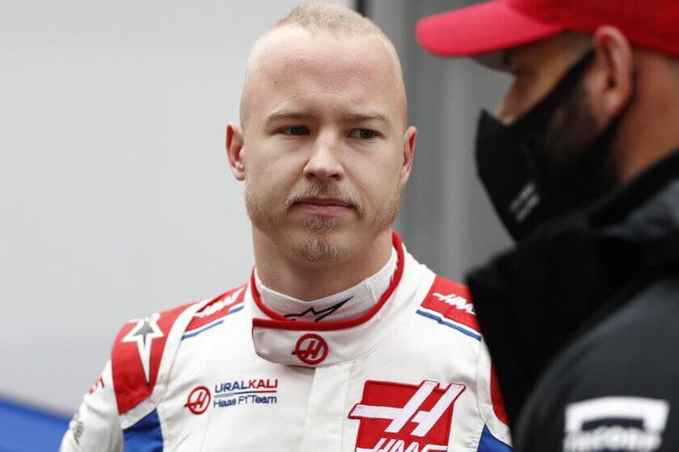
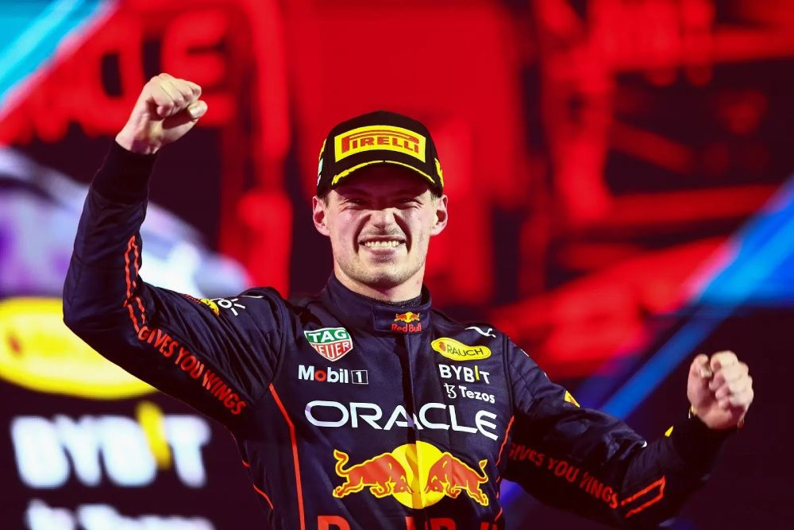

Ferrari sorprendió con el lanzamiento de su "livery" para el 2022
Pese a la accidentada filtración que se ha realizado por parte de la Scuderia italiana el día anterior a su lanzamiento, hicieron una gran presentación del vehículo que usarán en la temporada 2022, dando a dar un indicio a los fans tifosis por el nombre del mismo (F1-75), nombre similar que usó el equipo en el 2002, año donde dominaba de la mano del Káiser Michael Schumacher

Nikita queda fuera de la Fórmula 1
Debido al patrocinio "Uralkali" que fue el causante de su asiento en la categoría debe resindir de su patronicio con Haas por órden de la FIA, ya que tiene relación con el presidente Vladimir Putin. En resumen, si el patrocinio se va, Mazepin y su padre también. A causa de este efecto dominó, Haas está afligido económicamente pero pudieron buscar el reemplazo del piloto ruso, será Pietro Fittipaldi, hijo de un 3 veces campeón de la F1.

Red Bull se asegura a su piloto estrella hasta 2028
El campeón del mundo se aseguró además de ganar un salario similar al de un 7 veces campeón mundial como lo es Lewis Hamilton, un renovación con el equipo austríaco que sería de 5 años. Esto se produjo gracias a las ganancias que obtuvo la escudería de la Bebida energética por el campeonato de pilotos y por la inversión los nuevos patronicios como Oracle y Bybit.
Ferrari sorprendió con el lanzamiento de su "livery" para el 2022
Pese a la accidentada filtración que se ha realizado por parte de la Scuderia italiana el día anterior a su lanzamiento, hicieron una gran presentación del vehículo que usarán en la temporada 2022, dando a dar un indicio a los fans tifosis por el nombre del mismo (F1-75), nombre similar que usó el equipo en el 2002, año donde dominaba de la mano del Káiser Michael Schumacher
Ferrari sorprendió con el lanzamiento de su "livery" para el 2022
Pese a la accidentada filtración que se ha realizado por parte de la Scuderia italiana el día anterior a su lanzamiento, hicieron una gran presentación del vehículo que usarán en la temporada 2022, dando a dar un indicio a los fans tifosis por el nombre del mismo (F1-75), nombre similar que usó el equipo en el 2002, año donde dominaba de la mano del Káiser Michael Schumacher
Ferrari sorprendió con el lanzamiento de su "livery" para el 2022
Pese a la accidentada filtración que se ha realizado por parte de la Scuderia italiana el día anterior a su lanzamiento, hicieron una gran presentación del vehículo que usarán en la temporada 2022, dando a dar un indicio a los fans tifosis por el nombre del mismo (F1-75), nombre similar que usó el equipo en el 2002, año donde dominaba de la mano del Káiser Michael Schumacher
Buenas noticias para los fanáticos de Imola
La Fórmula confirmó que el Autódromo Enzo y Dino Ferrari seguirá en el calendario hasta 2025. El circuito estuvo por pandemia en 2020 y 2021 pero originalmente entre 1981 y 2006 fue sede del GP de San Marino. Según Autosport, el contrato es de 25 millones de euros y en caso de tal no llegue a celebrarse con público por pandemia, la cuota no pasaría de los 10 millones.